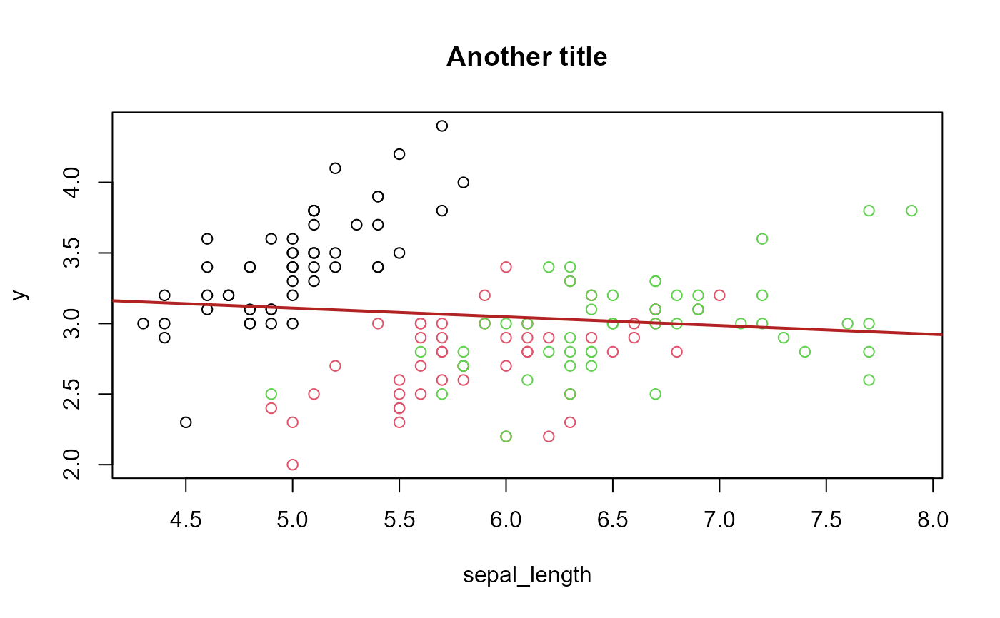

Full-fledged argument checking. Checks that the user provides arguments of the requested type (even complex) in a very simple way for the developer. Provides detailed and informative error messages for the user.
check_arg(
.x,
.type,
.x1,
.x2,
.x3,
.x4,
.x5,
.x6,
.x7,
.x8,
.x9,
...,
.message,
.choices = NULL,
.data = list(),
.value,
.env,
.up = 0
)
check_set_arg(
.x,
.type,
.x1,
.x2,
.x3,
.x4,
.x5,
.x6,
.x7,
.x8,
.x9,
...,
.message,
.choices = NULL,
.data = list(),
.value,
.env,
.up = 0
)
check_value(
.x,
.type,
.message,
.arg_name,
.prefix,
.choices = NULL,
.data = list(),
.value,
.env,
.up = 0
)
check_set_value(
.x,
.type,
.message,
.arg_name,
.prefix,
.choices = NULL,
.data = list(),
.value,
.env,
.up = 0
)
check_arg_plus
check_value_plusAn object of class function of length 1.
An object of class function of length 1.
An argument to be checked. Must be an argument name. Can also be the type, see details/examples.
A character string representing the requested type(s) of the arguments.
This is a bit long so please look at the details section or the vignette for explanations.
Each type is composed of one main class and restrictions (optional).
Types can be separated with pipes (|).
The main classes are: i) "scalar" for scalars, i.e. vectors of length one,
ii) "vector", iii) "matrix", iv) "data.frame",
v) "list", vi) formula, vii) function, viii) charin,
i.e. a character string in a set of choices, ix) "match",
i.e. a character scalar that should partially match a vector of choices,
x) path, a character scalar pointing to a file or directory,
xi) "class(my_class1, my_class2)", i.e. an object whose class is any
of the ones in parentheses, xii) "NA", something identical to NA.
You can then add optional restrictions: 1) len(a, b), i.e. the object
should be of length between a and b (you can leave a
or b missing, len(a) means length equal to a),
len(data) and len(value) are also possible (see details),
2) nrow(a,b) or ncol(a,b) to specify the expected number of
rows or columns, 3) arg(a,b), only for functions, to retrict the number
of arguments, 4) "na ok" to allow the object to have NAs (for "scalar" types),
or "no na" to restrict the object to have no NA (for "data.frame", "vector",
and "matrix" types), 5) GE, GT, LE and LT:
for numeric scalars/vectors/matrices, GE{expr} restrics the object
to have only values striclty greater than (greater or equal/strictly lower
than/lower or equal) the value in curly brackets, 6) e.g. scalar(type1, type2),
for scalars/vectors/matrices you can restrict the type of the object by
adding the expected type in parentheses: should it be numeric, logical, etc.
An argument to be checked. Must be an argument name. Can also be the type, see details/examples.
An argument to be checked. Must be an argument name. Can also be the type, see details/examples.
An argument to be checked. Must be an argument name. Can also be the type, see details/examples.
An argument to be checked. Must be an argument name. Can also be the type, see details/examples.
An argument to be checked. Must be an argument name. Can also be the type, see details/examples.
An argument to be checked. Must be an argument name. Can also be the type, see details/examples.
An argument to be checked. Must be an argument name. Can also be the type, see details/examples.
An argument to be checked. Must be an argument name. Can also be the type, see details/examples.
An argument to be checked. Must be an argument name. Can also be the type, see details/examples.
Only used to check '...' (dot-dot-dot) arguments.
A character string, optional. By default, if the user provides a
wrong argument, the error message stating what type of argument is required is
automatically formed. You can alternatively provide your own error message,
maybe more tailored to your function. The reason of why there is a problem is
appended in the end of the message. You can use the special character
__ARG__ in the message. If found, __ARG__ will be
replaced by the appropriate argument name. Note that this message is interpolated with string_magic().
Only if one of the types (in argument type) is "match". The values the argument can take. Note that even if the type is "match", this argument is optional since you have other ways to declare the choices.
Must be a data.frame, a list or a vector. Used in three situations. 1) if the global keywords eval or evalset are present: the argument will also be evaluated in the data (i.e. the argument can be a variable name of the data set). 2) if the argument is expected to be a formula and var(data) is included in the type: then the formula will be expected to contain variables from .data. 3) if the keywords len(data), nrow(data) or ncol(data) are requested, then the required length, number of rows/columns, will be based on the data provided in .data.
An integer scalar or a named list of integers scalars. Used when the keyword value is present (like for instance in len(value)). If several values are to be provided, then it must be a named list with names equal to the codes: for instance if nrow(value) and ncol(value) are both present in the type, you can use (numbers are an example) .value = list(nrow = 5, ncol = 6). See Section IV) in the examples.
An environment defaults to the frame where the user called the original function. Only used in two situations. 1) if the global keywords eval or evalset are present: the argument will also be evaluated in this environment. 2) if the argument is expected to be a formula and var(env) is included in the type: then the formula will be expected to contain variables existing in .env.
Integer, default is 0. If the user provides a wrong argument, the error message will integrate the call of the function from which check_arg has been called. If check_arg is called in a non-user level sub function of a main user-level function, then use .up = 1 to make the error message look like it occured in the main function (and not in the sub function). Of course you can have values higher than 1.
A character scalar. If .message is not provided, an automatic error message will be generated using .arg_name as the argument name. The structure of the message will be "Argument '[.arg_name]' must be [requested type]. Problem: [detail of the problem]".
A character scalar. If .message is not provided, an automatic error message will be generated. The structure of the message will be "[.prefix] must be [requested type]. Problem: [detail of the problem]".
In case the type is "match", it returns the matched value. In any other case, NULL is returned.
check_set_arg(): Same as check_arg, but includes in addition: i) default setting, ii) type conversion, iii) partial matching, and iv) checking list elements. (Small drawback: cannot be turned off.)
check_value(): Checks if a (single) value is of the appropriate type
check_set_value(): Same as check_value, but includes in addition: i) default setting, ii) type conversion, iii) partial matching, and iv) checking list elements. (Small drawback: cannot be turned off.)
To write the expected type of an argument, you need to write the main class in combination with the class's options and restrictions (if any).
The syntax is: "main_class option(s) restriction(s)"
A type MUST have at least one main class. For example: in the type "logical vector len(,2) no na", vector is the main class, no na is the option, and logical and len(,2) are restrictions
There are 14 main classes that can be checked. On the left the keyword, on the right what is expected from the argument, and in square brackets the related section in the examples:
scalar: an atomic vector of length 1 [Section I)]
vector: an atomic vector [Section IV)]
matrix: a matrix [Section IV)]
vmatrix: a matrix or vector [Section IV)]
data.frame: a data.frame [Section VI)]
vdata.frame: a data.frame or vector [Section VI)]
list: a list [Section V)]
formula: a formula [Section VIII)]
function: a function [Section V)]
charin: a character vector with values in a vector of choices [Section III)]
match: a character vector with values in a vector of choices, partial matching enabled and only available in check_set_arg [Section III)]
path: a character scalar pointing to a file or a directory
class: a custom class [Section VI)]
NA: a vector of length 1 equal to NA--does not support options nor restrictions, usually combined with other main classes (see Section on combining multiple types) [Section VI)]
There are eight type options, they are not available for each types. Here what they do and the types to which they are associated:
NA OK (or NAOK): Tolerates the presence of NA values. Available for scalar.
NO NA (or NONA): Throws an error if NAs are present. Available for vector, matrix, vmatrix, data.frame, and vdata.frame.
square: Enforces the matrix to be square. Available for matrix, vmatrix.
named: Enforces the object to have names. Available for vector, list.
multi: Allows multiple matches. Available for charin, match.
strict: Makes the matching case-sensitive. Available for match.
os and ts: Available for formula. Option os (resp. ts) enforces that the formula is one-sided (resp. two-sided).
dir, read and create: Available for path. Option dir checks whether the path points to a directory and not a file. Option read checks whether the file actually exists and has read permission. Option create creates up to the grand-parent folder if it was not yet existing.
You can further add restrictions. There are roughly six types of restrictions. Here what they do and the types to which they are associated:
sub-type restriction: For atomic types (scalar, vector, matrix or vmatrix), you can restrict the underlying data to be of a specific sub-type. The simple sub-types are: i) integer (numeric without decimals and logicals), i') strict integer (numeric that can be converted to integer with as.integer, and not logicals), ii) numeric, iii) factor, iv) logical and iv') loose logical (0/1 are also OK). Simply add the sub-type in the type string (e.g. "integer scalar"), or if you allow multiple types, put them in parentheses rigth after the main class: e.g. "scalar(character, integer)". See Section XI) in the examples. See also the section below for more information on the sub-types. Some types (character, integer, numeric, logical and factor) also support the keyword "conv" in check_set_arg.
GE/GT/LE/LT: For atomic types with numeric data, you can check the values in the object. The GE/GT/LE/LT mean respectively greater or equal/greater than/lower or equal/lower than. The syntax is GE{expr}, with expr any expression. See Section IV) in the examples.
len(a, b): You can restrict the length of objects with len(a, b) (with a and b integers). Available for vector and list. Then the length must be in between a and b. Either a or b can be missing which means absence of restriction. If len(a), this means must be equal to a. You can also use the keywords len(data) which ensures that the length is the same as the length of the object given in the argument .data, or len(value) which ensures the length is equal to the value given in .value. See Section IV) in the examples.
nrow(a, b), ncol(a, b): To restrict the number of rows and columns. Available for matrix, vmatrix, data.frame, vdata.frame. Tolerates the data and value keywords (see in len). See Section IV) in the examples.
var(data, env): Available only for formula. var(data) ensures that the variables in the formula are present in the data set given by the extra argument .data. var(env) ensures they are present in the environment, and var(data, env) in either the environment or the data set. See Section VIII) in the examples.
arg(a, b): Available only for function. Ensures that the function has a number of arguments between a and b, both integers (possibly missing). Tolerates the value keyword (see in len). See Section V) in the examples.
left(a, b) and right(a, b): Only available for formula. Restricts the number of parts in the left-hand-side or in the right-hand-side of the formula. Tolerates the value keyword (see in len). See Section VIII) in the examples.
[Section I)]: R:Section%20I) [Section IV)]: R:Section%20IV) [Section IV)]: R:Section%20IV) [Section IV)]: R:Section%20IV) [Section VI)]: R:Section%20VI) [Section VI)]: R:Section%20VI) [Section V)]: R:Section%20V) [Section VIII)]: R:Section%20VIII) [Section V)]: R:Section%20V) [Section III)]: R:Section%20III) [Section III)]: R:Section%20III) [Section VI)]: R:Section%20VI) [Section VI)]: R:Section%20VI)
There are eight global keywords that can be placed anywhere in the type. They are described in Section II) in the examples.
NULL: allows the argument to be equal to NULL.
safe NULL: allows the argument to be equal to NULL, but an error is thrown if the argument is of the type base$variable or base[["variable"]]. This is to prevent oversights from the user, especially useful when the main class is a vector.
NULL{expr}: allows the argument to be equal to NULL, if the argument is NULL, then it assigns the value of expr to the argument.
MBT: (means "must be there") an error is thrown if the argument is not provided by the user.
eval: used in combination with the extra argument .data. Evaluates the value of the argument both in the data set and in the environment (this means the argument can be a variable name).
evalset: like eval, but after evaluation, assigns the obtained value to the argument. Only available in check_set_arg.
dotnames: only when checking '...' argument (see the related section below). Enforces that each object in '...' has a name.
match and charin typesThe main classes match and charin are similar to match.arg. These two types are detailed in the examples Section III).
By default, the main class match expects a single character string whose value is in a set of choices. By default, there is no case sensitity (which can be turned on with the option strict) and there is always partial matching. It can expect a vector (instead of a single element) if the option multi is present.
You have three different ways to set the choices:
by setting the argument default: e.g. fun = function(x = c("Tom", "John")) check_arg(x, "match")
by providing the argument .choices: e.g. fun = function(x) check_arg(x, "match", .choices = c("Tom", "John"))
by writing the choices in parentheses: e.g. fun = function(x) check_arg(x, "match(Tom, John)")
When the user doesn't provide the argument, the default is set to the first choice.
Since the main class match performs a re-assignment of the variable, it is only available in check_set_arg.
The main class charin is similar to match in that it expects a single character string in a set of choices. The main differences are: i) there is no partial matching, ii) the choices cannot be set by setting the argument default, and iii) its checking can be turned off with setDreamer_check(FALSE) (that's the main difference between check_arg and check_set_arg).
You can combine multiple types with a pipe: '|'. The syntax is as follows:
"main_type option(x) restriction(s) | main_type option(x) restriction(s) | main_type option(x) restriction(s)"
You can combine as many types as you want. The behavior is as follows: if the argument matches any of the types, then that's fine.
For example, say you require an argument to be either a logical scalar, either a data.frame, then you can write: check_arg(x, "logical scalar | data.frame"). See Section X) in the examples for a more complex example.
The type MUST be a character string of length 1. Two main classes must be separated by a pipe. Otherwise the order of the keywords, the spaces, or the case don't matter. Further the global keywords can be placed anywhere and need not be separated by a pipe.
Note that a rare but problematic situation is when you set a default with the global NULL{default} and that default contains a keyword. For example in the type "NULL{list()} numeric matrix" list should not be considered as a main class, but only matrix. To be on the safe side, then just separate them with a pipe: "NULL{list()} | numeric matrix" would work appropriately.
You can check multiple arguments at once provided they are of the same type. Say variables x1 to x5 should be logical scalars. Just use: check_arg(x1, x2, x3, x4, x5, "logical scalar"). It is always more efficient to check multiple arguments of the same type at once.
It is important to note that in case of multiple arguments, you can place the type anywhere you want provided it is a character literal (and not in a variable!). This means that check_arg("logical scalar", x1, x2, x3, x4, x5) would also work.
If your type is in a variable, then you must explicitly provide the argument .type (like in check_arg(x, .type = my_type)).
.up)When you develop several functions that share common features, it is usually good practice to pool the common computations into an internal function (to avoid code duplication).
When you do so, you can do all the argument checking in the internal function. Then use the argument .up = 1 so that if the user provdes a wrong argument, the error message will refer to the user-level function and NOT to the internal function, making it much clearer for the user.
This is detailed in Section XII) in the examples.
... (dot-dot-dot) argumentcheck_arg offers the possibility to check the ..., provided each expected object in ... should be of the same type. To do that, just add ... as the first argument in check_arg, that's it! For example, you want all elements of ... to be numeric vectors, then use check_arg(..., "numeric vector").
When checking ..., you have the special global argument dotnames which enforces that each element in ... has a name. Further, the other global MBT (must be there) now means that at least one element in ... must be provided.
This is detailed in Section XIV) in the examples.
check_arg and check_set_arg?The function check_set_arg extends check_arg in several ways. First it offers new keywords:
evalset: evaluates the argument in a data set (i.e. the argument can be variables names of a data set), then re-assigns back its value.
NULL{default}: if the argument is NULL, then the value in curly brackets is assigned to the argument.
match: if the argument partially matches the choices, then the matches are assigned to the argument.
conv: in atomic main classes (scalar, vector and matrix), the data can be converted to a given sub-type (currently integer, numeric, logical, character and factor), then assigned back to the argument.
As you can see, it's all about assignment: these special keywords of check_set_arg will modify the arguments in place. You have such examples in Section II), III) and XI) of the examples.
Second, it allows to check arguments that are themselves list of arguments (note that conv also works in that case). For example, one argument of your function is plot.opts, a list of arguments to be passed to plot. You can check the elements of plot.opts (e.g. plot.opts$main) with check_set_arg. It also re-assigns the values of the list given the special keywords just described. List element checking is described in Section XIII) of the examples.
Then why creating two functions? If the user runs a function in which the arguments were checked with check_arg and it works, then argument checking can be safely disabled, and it would also work. On the other hand, since check_set_arg does value re-assignment, it cannot be safely turned-off--therefore cannot be disabled with setDreamerr_check. Distinguishing between the two allows the user to disable argument checking and gain (although very modest) perfomance in large loops. Therefore, when you create functions, I suggest to use always check_arg, unless you need the extra features of check_set_arg.
check_valueThe functions check_value and check_set_value are almost identical to the respective functions check_arg and check_set_arg. The key differences are as follows:
They can check values instead of arguments. Indeed, if you try to check a value with check_arg, nothing will happen (provided the name of the value is not an argument). Why? Because it will consider it as a missing argument. Therefore, you are can check anything with check_value.
You can check only one item at a time (whereas you can check up to 10 arguments in check_arg).
The main reason for using check_value is that sometimes you only know if an argument is valid after having perfomed some modifications on it. For instance, the argument may be a formula, but you also require that the variables in the formula are numeric. You cannot check all that at once with check_arg, but you can first check the formula with it, then extract the values from the formula and use check_value to ensure that the variables from the formula are numeric.
check_value is detailed in Section XVI) in the examples.
Although the argument checking offered by check_arg is highly optimized and fast (it depends on the type (and your computer), but it is roughly of the order of 80 micro seconds for non-missing arguments, 20 micro seconds for missing arguments), you may want to disable it for small functions in large loops (>100K iterations although this practice is not really common in R). If so, just use the function setDreamerr_check, by typing setDreamerr_check(FALSE). This will disable any call to check_arg.
Note that the argument checking of check_set_arg cannot be disabled because the special types it allows perform reassignment in the upper frame. That's the main difference with check_arg.
If you're new to check_arg, given the many types available, it's very common to make mistakes when creating check_arg calls. But no worry, the developer mode is here to help!
The developer mode ensures that any problematic call is spotted and the problem is clearly stated. It also refers to the related section in the examples if appropriate. To turn the developer mode on, use setDreamerr_dev.mode(TRUE).
Note that since this mode ensures a detailed cheking of the call it is thus a strain on performance and should be always turned off otherwise needed. See Section XV) in the examples.
# check_arg is only used within functions
#
# I) Example for the main class "scalar"
#
test_scalar = function(xlog, xnum, xint, xnumlt, xdate){
# when forming the type: you can see that case, order and spaces don't matter
check_arg(xlog, "scalarLogical")
check_arg(xnum, "numeric scalar")
check_arg(xint, " scalar Integer GE{0} ")
check_arg(xnumlt, "numeric scalar lt{0.15}")
# Below it is critical that there's no space between scalar and the parenthesis
check_arg(xdate, "scalar(Date)")
invisible(NULL)
}
# Following is OK
test_scalar()
test_scalar(xlog = FALSE, xnum = 55, xint = 5, xnumlt = 0.11, xdate = Sys.Date())
#
# Now errors, all the following are wrong arguments, leading to errors
# Please note the details in the error messages.
# logical
try(test_scalar(xlog = NA))
#> Error : in test_scalar(xlog = NA):
#> Argument `xlog` must be a logical scalar without NA.
#> PROBLEM: it is equal to NA while it should be NA-free.
try(test_scalar(xlog = 2))
#> Error : in test_scalar(xlog = 2):
#> Argument `xlog` must be a logical scalar.
#> PROBLEM: it is not of type logical (instead it is of type 'numeric').
try(test_scalar(xlog = sum))
#> Error : in test_scalar(xlog = sum):
#> Argument `xlog` must be a logical scalar.
#> PROBLEM: it is not a scalar, it's a function.
try(test_scalar(xlog = faefeaf5))
#> Error : in test_scalar(xlog = faefeaf5):
#> Argument 'xlog' (equal to 'faefeaf5') could not be evaluated.
#> PROBLEM: object 'faefeaf5' not found.
try(test_scalar(xlog = c(TRUE, FALSE)))
#> Error : in test_scalar(xlog = c(TRUE, FALSE)):
#> Argument `xlog` must be a logical scalar.
#> PROBLEM: it is not of length 1 (currently: 2).
try(test_scalar(xlog = c()))
#> Error : in test_scalar(xlog = c()):
#> Argument `xlog` must be a logical scalar.
#> PROBLEM: it is not of length 1 (currently: 0).
# numeric
try(test_scalar(xnum = NA))
#> Error : in test_scalar(xnum = NA):
#> Argument `xnum` must be a numeric scalar without NA.
#> PROBLEM: it is equal to NA while it should be NA-free.
try(test_scalar(xnum = 1:5))
#> Error : in test_scalar(xnum = 1:5):
#> Argument `xnum` must be a numeric scalar.
#> PROBLEM: it is not of length 1 (currently: 5).
try(test_scalar(xnum = Sys.Date()))
#> Error : in test_scalar(xnum = Sys.Date()):
#> Argument `xnum` must be a numeric scalar.
#> PROBLEM: it is not numeric (instead it is of type 'Date').
# integer
try(test_scalar(xint = 5.5))
#> Error : in test_scalar(xint = 5.5):
#> Argument `xint` must be an integer scalar with positive values.
#> PROBLEM: it is not an integer, although it is numeric.
try(test_scalar(xint = -1))
#> Error : in test_scalar(xint = -1):
#> Argument `xint` must be an integer scalar with positive values.
#> PROBLEM: it is strictly lower than 0 (-1).
# num < 0.15
try(test_scalar(xnumlt = 0.15))
#> Error : in test_scalar(xnumlt = 0.15):
#> Argument `xnumlt` must be a numeric scalar strictly lower than 0.15.
#> PROBLEM: it is equal to 0.15000 (while it should be *striclty* lower than
#> it).
try(test_scalar(xnumlt = 0.16))
#> Error : in test_scalar(xnumlt = 0.16):
#> Argument `xnumlt` must be a numeric scalar strictly lower than 0.15.
#> PROBLEM: it is greater than 0.15000 (0.16).
try(test_scalar(xnumlt = Sys.Date()))
#> Error : in test_scalar(xnumlt = Sys.Date()):
#> Argument `xnumlt` must be a numeric scalar strictly lower than 0.15.
#> PROBLEM: it is not numeric (instead it is of type 'Date').
# Date
try(test_scalar(xdate = 0.15))
#> Error : in test_scalar(xdate = 0.15):
#> Argument `xdate` must be a scalar of type 'Date'.
#> PROBLEM: it is not of the appropriate type (instead it is of type
#> 'numeric').
#
# II) Examples for the globals: NULL, MBT, eval, evalset
#
test_globals = function(xnum, xlog = TRUE, xint){
# Default setting with NULL is only available in check_set_arg
# MBT (must be there) throws an error if the user doesn't provide the argument
check_set_arg(xnum, "numeric vector NULL{1} MBT")
# NULL allows NULL values
check_arg(xlog, "logical scalar safe NULL")
check_arg(xint, "integer vector")
list(xnum = xnum, xlog = xlog)
}
# xnum is required because of MBT option
try(test_globals())
#> Error : in test_globals():
#> Argument 'xnum' is required.
#> PROBLEM: it is missing.
# NULL{expr} sets the value of xnum to expr if xnum = NULL
# Here NULL{1} sets xnum to 1
test_globals(xnum = NULL)
#> $xnum
#> [1] 1
#>
#> $xlog
#> [1] TRUE
#>
# NULL (not NULL{expr}) does not reassign: xlog remains NULL
test_globals(xnum = NULL, xlog = NULL)
#> $xnum
#> [1] 1
#>
#> $xlog
#> NULL
#>
# safe NULL: doesn't accept NULL from data.frame (DF) subselection
# ex: the variable 'log' does not exist in the iris DF
try(test_globals(5, xlog = iris$log))
#> Error : in test_globals(5, xlog = iris$log):
#> The (nullable) argument `xlog` must be a logical scalar.
#> PROBLEM: it is NULL (fine) but you entered 'iris$log'. If you really want it
#> to be NULL, please use NULL directly or a variable containing NULL.
# but xnum accepts it
test_globals(iris$log)
#> $xnum
#> [1] 1
#>
#> $xlog
#> [1] TRUE
#>
#
# eval and evalset
#
test_eval = function(x1, x2, data = list(), i = c()){
check_arg(x1, "eval numeric vector", .data = data)
# evalset is in check_set_arg
check_set_arg(x2, "evalset numeric vector", .data = data)
# We show the variables
if(1 %in% i){
cat("x1:\n")
print(as.character(try(x1, silent = TRUE)))
}
if(2 %in% i){
cat("x2:\n")
print(as.character(try(x2, silent = TRUE)))
}
}
# eval: evaluates the argument both in the environment and the data
test_eval(x1 = Sepal.Length, data = iris) # OK
# if we use a variable not in the environment nor in the data => error
try(test_eval(x1 = Sopal.Length, data = iris))
#> Error : in test_eval(x1 = Sopal.Length, data = iri...:
#> Argument 'x1' (equal to 'Sopal.Length') could not be evaluated.
#> PROBLEM: The variable 'Sopal.Length' is not in the data set (given in
#> argument 'data') nor in the environment.
# but eval doesn't reassign back the value of the argument:
test_eval(x1 = Sepal.Length, data = iris, i = 1)
#> x1:
#> [1] "Error in eval(expr, envir, enclos) : object 'Sepal.Length' not found\n"
# evaset does the same as eval, but also reasssigns the value obtained:
test_eval(x2 = Sepal.Length, data = iris, i = 2)
#> x2:
#> [1] "5.1" "4.9" "4.7" "4.6" "5" "5.4" "4.6" "5" "4.4" "4.9" "5.4" "4.8"
#> [13] "4.8" "4.3" "5.8" "5.7" "5.4" "5.1" "5.7" "5.1" "5.4" "5.1" "4.6" "5.1"
#> [25] "4.8" "5" "5" "5.2" "5.2" "4.7" "4.8" "5.4" "5.2" "5.5" "4.9" "5"
#> [37] "5.5" "4.9" "4.4" "5.1" "5" "4.5" "4.4" "5" "5.1" "4.8" "5.1" "4.6"
#> [49] "5.3" "5" "7" "6.4" "6.9" "5.5" "6.5" "5.7" "6.3" "4.9" "6.6" "5.2"
#> [61] "5" "5.9" "6" "6.1" "5.6" "6.7" "5.6" "5.8" "6.2" "5.6" "5.9" "6.1"
#> [73] "6.3" "6.1" "6.4" "6.6" "6.8" "6.7" "6" "5.7" "5.5" "5.5" "5.8" "6"
#> [85] "5.4" "6" "6.7" "6.3" "5.6" "5.5" "5.5" "6.1" "5.8" "5" "5.6" "5.7"
#> [97] "5.7" "6.2" "5.1" "5.7" "6.3" "5.8" "7.1" "6.3" "6.5" "7.6" "4.9" "7.3"
#> [109] "6.7" "7.2" "6.5" "6.4" "6.8" "5.7" "5.8" "6.4" "6.5" "7.7" "7.7" "6"
#> [121] "6.9" "5.6" "7.7" "6.3" "6.7" "7.2" "6.2" "6.1" "6.4" "7.2" "7.4" "7.9"
#> [133] "6.4" "6.3" "6.1" "7.7" "6.3" "6.4" "6" "6.9" "6.7" "6.9" "5.8" "6.8"
#> [145] "6.7" "6.7" "6.3" "6.5" "6.2" "5.9"
#
# III) Match and charin
#
# match => does partial matching, only available in check_set_arg
# charin => no partial matching, exact values required, but in check_arg
#
# match
#
# Note the three different ways to provide the choices
#
# If the argument has no default, it is kept that way (see x2)
# If the argument is not provided by the user,
# it is left untouched (see x3)
test_match = function(x1 = c("bonjour", "Au revoir"), x2, x3 = "test"){
# 1) choices set thanks to the argument default (like in match.arg)
check_set_arg(x1, "strict match")
# 2) choices set with the argument .choices
check_set_arg(x2, "match", .choices = c("Sarah", "Santa", "Santa Fe", "SANTA"))
# 3) choices set with the parentheses
check_set_arg(x3, "multi match(Orange, Juice, Good)")
cat("x1:", x1, "\nx2:", tryCatch(x2, error = function(e) "[missing]"), "\nx3:", x3, "\n")
}
# Everything below is OK
test_match()
#> x1: bonjour
#> x2: [missing]
#> x3: test
test_match(x1 = "Au", x2 = "sar", x3 = c("GOOD", "or"))
#> x1: Au revoir
#> x2: Sarah
#> x3: Good Orange
test_match(x2 = "Santa")
#> x1: bonjour
#> x2: Santa
#> x3: test
# Errors caught:
try(test_match(x1 = c("Au", "revoir")))
#> Error : in test_match(x1 = c("Au", "revoir")):
#> Argument `x1` must be a single character equal to 'bonjour' or 'Au revoir'
#> (case sensitive).
#> PROBLEM: it is not of length 1 (currently: 2).
try(test_match(x1 = "au"))
#> Error : in test_match(x1 = "au"):
#> Argument `x1` must be a single character equal to 'bonjour' or 'Au revoir'
#> (case sensitive).
#> PROBLEM: no match was found for 'au' (note that it is case sensitive, maybe
#> you meant 'Au revoir'?).
try(test_match(x1 = sum))
#> Error : in test_match(x1 = sum):
#> Argument `x1` must be a single character equal to 'bonjour' or 'Au revoir'
#> (case sensitive).
#> PROBLEM: it is not a vector, it's a function.
try(test_match(x1 = list(a = 1:5)))
#> Error : in test_match(x1 = list(a = 1:5)):
#> Argument `x1` must be a single character equal to 'bonjour' or 'Au revoir'
#> (case sensitive).
#> PROBLEM: it is not a vector, it's a list.
try(test_match(x2 = "san"))
#> Error : in test_match(x2 = "san"):
#> Argument `x2` must be a single character equal to 'Sarah', 'Santa', 'Santa
#> Fe' or 'SANTA'.
#> PROBLEM: more than one value was matched for 'san': 'Santa', 'Santa Fe' and
#> 'SANTA'.
try(test_match(x2 = "santa"))
#> Error : in test_match(x2 = "santa"):
#> Argument `x2` must be a single character equal to 'Sarah', 'Santa', 'Santa
#> Fe' or 'SANTA'.
#> PROBLEM: more than one value was matched for 'santa': 'Santa' and 'SANTA',
#> please check the case.
# Same value as x3's default, but now provided by the user
try(test_match(x3 = "test"))
#> Error : in test_match(x3 = "test"):
#> Argument `x3` must be a character vector with values equal to 'Orange',
#> 'Juice' or 'Good'.
#> PROBLEM: no match was found for 'test'.
try(test_match(x3 = c("or", "ju", "bad")))
#> Error : in test_match(x3 = c("or", "ju", "bad")):
#> Argument `x3` must be a character vector with values equal to 'Orange',
#> 'Juice' or 'Good'.
#> PROBLEM: no match was found for 'bad' [third element].
# You can check multiple arguments at once
# [see details for multiple arguments in Section X)]
# Note that now the choices must be set in the argument
# and they must have the same options (ie multi, strict)
test_match_multi = function(x1 = c("bonjour", "Au revoir"), x2 = c("Sarah", "Santa"),
x3 = c("Orange", "Juice", "Good")){
# multiple arguments at once
check_set_arg(x1, x2, x3, "match")
cat("x1:", x1, "\nx2:", x2, "\nx3:", x3, "\n")
}
test_match_multi()
#> x1: bonjour
#> x2: Sarah
#> x3: Orange
#
# charin
#
# charin is similar to match but requires the user to provide the exact value
# only the multi option is available
test_charin = function(x1 = "bonjour", x2 = "Sarah"){
# 1) set the choices with .choices
check_arg(x1, "charin", .choices = c("bonjour", "au revoir"))
# 2) set the choices with the parentheses
check_arg(x2, "multi charin(Sarah, Santa, Santa Fe)")
cat("x1:", x1, "\nx2:", x2, "\n")
}
# Now we need the exact values
test_charin("au revoir", c("Santa", "Santa Fe"))
#> x1: au revoir
#> x2: Santa Santa Fe
# Errors when partial matching tried
try(test_charin("au re"))
#> Error : in test_charin("au re"):
#> Argument `x1` must be a single character equal to 'bonjour' or 'au revoir'.
#> PROBLEM: the value 'au re' doesn't match any choice (note that no partial
#> matching is performed).
#
# IV) Vectors and marices, equalities, dimensions and lengths
#
# You can restrict the length of objects with len(a, b)
# - if len(a, b) length must be in between a and b
# - if len(a, ) length must be at least a
# - if len(, b) length must be at most b
# - if len(a) length must be equal to a
# You can also use the special keywords len(data) or len(value),
# but then the argument .data or .value must also be provided.
# (the related example comes later)
#
# You can restrict the number of rows/columns with nrow(a, b) and ncol(a, b)
#
# You can restrict a matrix to be square with the 'square' keyword
#
# You can restrict the values an element can take with GE/GT/LE/LT,
# respectively greater or equal/greater than/lower or equal/lower than
# The syntax is GE{expr}, with expr any expression
# Of course, it only works for numeric values
#
# By default NAs are tolerated in vector, matrix and data.frame.
# You can refuse NAs using the keyword: 'no na' or 'nona'
#
test_vmat = function(xvec, xmat, xvmat, xstmat, xnamed){
# vector of integers with values between 5 and exp(3)
check_arg(xvec, "integer Vector GE{5} LT{exp(3)}")
# logical matrix with at least two rows and with 3 columns
check_arg(xmat, "logicalMatrix NROW(2,) NCOL(3)")
# vector or matrix (vmatrix) of integers or character strings
# with at most 3 observations
# NAs are not allowed
check_arg(xvmat, "vmatrix(character, integer) nrow(,3) no na")
# square matrix of integers, logicals reports errors
check_arg(xstmat, "strict integer square Matrix")
# A vector with names of length 2
check_arg(xnamed, "named Vector len(2)")
invisible(NULL)
}
# OK
test_vmat(xvec = 5:20, xmat = matrix(TRUE, 3, 3), xvmat = c("abc", 4, 3),
xstmat = matrix(1:4, 2, 2), xnamed = c(bon=1, jour=2))
# Vector checks:
try(test_vmat(xvec = 2))
#> Error : in test_vmat(xvec = 2):
#> Argument `xvec` must be an integer vector with values in between 5 and 20
#> (strictly).
#> PROBLEM: it is strictly lower than 5 (2).
try(test_vmat(xvec = 21))
#> Error : in test_vmat(xvec = 21):
#> Argument `xvec` must be an integer vector with values in between 5 and 20
#> (strictly).
#> PROBLEM: it is greater than 20.086 (21).
try(test_vmat(xvec = 5.5))
#> Error : in test_vmat(xvec = 5.5):
#> Argument `xvec` must be an integer vector with values in between 5 and 20
#> (strictly).
#> PROBLEM: it is not of type integer, although it is numeric.
# Matrix checks:
try(test_vmat(xmat = matrix(TRUE, 3, 4)))
#> Error : in test_vmat(xmat = matrix(TRUE, 3, 4)):
#> Argument `xmat` must be a logical matrix with at least 2 rows and with 3
#> columns.
#> PROBLEM: it has 4 columns instead of 3.
try(test_vmat(xmat = matrix(2, 3, 3)))
#> Error : in test_vmat(xmat = matrix(2, 3, 3)):
#> Argument `xmat` must be a logical matrix with at least 2 rows and with 3
#> columns.
#> PROBLEM: it is not of type logical (instead it is of type 'numeric').
try(test_vmat(xmat = matrix(FALSE, 1, 3)))
#> Error : in test_vmat(xmat = matrix(FALSE, 1, 3)):
#> Argument `xmat` must be a logical matrix with at least 2 rows and with 3
#> columns.
#> PROBLEM: it has 1 row while it should have at least 2 rows.
try(test_vmat(xmat = iris))
#> Error : in test_vmat(xmat = iris):
#> Argument `xmat` must be a logical matrix.
#> PROBLEM: it is not a matrix (instead it is a data.frame).
try(test_vmat(xvmat = iris))
#> Error : in test_vmat(xvmat = iris):
#> Argument `xvmat` must be a matrix (or vector) of type 'character' or
#> 'integer'.
#> PROBLEM: it is not a matrix nor a vector (instead it is a data.frame).
try(test_vmat(xvmat = c(NA, 5)))
#> Error : in test_vmat(xvmat = c(NA, 5)):
#> Argument `xvmat` must be a matrix (or vector) of type 'character' or
#> 'integer' without NAs with no more than 3 rows.
#> PROBLEM: it contains 1 NA while it should be NA-free.
try(test_vmat(xstmat = matrix(1, 1, 3)))
#> Error : in test_vmat(xstmat = matrix(1, 1, 3)):
#> Argument `xstmat` must be a square integer matrix.
#> PROBLEM: it is not a square matrix (1 row and 3 columns).
try(test_vmat(xstmat = matrix(c(TRUE, FALSE, NA), 3, 3)))
#> Error : in test_vmat(xstmat = matrix(c(TRUE, FALSE...:
#> Argument `xstmat` must be a square integer matrix.
#> PROBLEM: it is not strictly of type integer, instead it is a logical.
# Named vector checks:
try(test_vmat(xnamed = 1:3))
#> Error : in test_vmat(xnamed = 1:3):
#> Argument `xnamed` must be a named vector of length 2.
#> PROBLEM: it does not have a name attribute.
try(test_vmat(xnamed = c(bon=1, jour=2, les=3)))
#> Error : in test_vmat(xnamed = c(bon = 1, jour = 2,...:
#> Argument `xnamed` must be a named vector of length 2.
#> PROBLEM: it is of length 3 instead of 2.
#
# Illustration of the keywords 'data', 'value'
#
# 'value'
# Matrix multiplication X * Y * Z
test_dynamic_restriction = function(x, y, z){
check_arg(x, "mbt numeric matrix")
check_arg(y, "mbt numeric matrix nrow(value)", .value = ncol(x))
check_arg(z, "mbt numeric matrix nrow(value)", .value = ncol(y))
# An alternative to the previous two lines:
# check_arg(z, "mbt numeric matrix")
# check_arg(y, "mbt numeric matrix nrow(value) ncol(value)",
# .value = list(nrow = ncol(x), ncol = nrow(z)))
x %*% y %*% z
}
x = matrix(1, 2, 3)
y = matrix(2, 3, 5)
z = matrix(rnorm(10), 5, 2)
test_dynamic_restriction(x, y, z)
#> [,1] [,2]
#> [1,] -14.68151 -15.81842
#> [2,] -14.68151 -15.81842
# Now error
try(test_dynamic_restriction(x, matrix(5, 1, 2), z))
#> Error : in test_dynamic_restriction(x, matrix(5, 1...:
#> Argument `y` must be a numeric matrix with, in this context, 3 rows.
#> PROBLEM: it has 1 row instead of 3.
# 'data'
# Computing maximum difference between two matrices
test_dynamic_bis = function(x, y){
check_arg(x, "mbt numeric matrix")
# we require y to be of the same dimension as x
check_arg(y, "mbt numeric matrix nrow(data) ncol(data)", .data = x)
max(abs(x - y))
}
test_dynamic_bis(x, x)
#> [1] 0
# Now error
try(test_dynamic_bis(x, y))
#> Error : in test_dynamic_bis(x, y):
#> Argument `y` must be a numeric matrix with the same dimensions as argument
#> 'x' (2 rows and 3 columns).
#> PROBLEM: it has 3 rows instead of 2.
#
# V) Functions and lists
#
# You can restrict the number of arguments of a
# function with arg(a, b) [see Section IV) for details]
test_funlist = function(xfun, xlist){
check_arg(xfun, "function arg(1,2)")
check_arg(xlist, "list len(,3)")
invisible(NULL)
}
# OK
test_funlist(xfun = sum, xlist = iris[c(1,2)])
# function checks:
try(test_funlist(xfun = function(x, y, z) x + y + z))
#> Error : in test_funlist(xfun = function(x, y, z) x...:
#> Argument `xfun` must be a function with a number of arguments in between 1
#> and 2.
#> PROBLEM: it has 3 arguments while it should have a maximum of 2 arguments.
# list checks:
try(test_funlist(xlist = iris[1:4]))
#> Error : in test_funlist(xlist = iris[1:4]):
#> Argument `xlist` must be a list of length not greater than 3.
#> PROBLEM: it is of length 4, while it should have a maximum length of 3.
try(test_funlist(xlist = list()))
#
# VI) Data.frame and custom class
#
test_df = function(xdf, xvdf, xcustom){
# data.frame with at least 100 observations
check_arg(xdf, "data.frame nrow(100,)")
# data.frame or vector (vdata.frame)
check_arg(xvdf, "vdata.frame")
# Either: i) object of class glm or lm
# ii) NA
# iii) NULL
check_arg(xcustom, "class(lm, glm)|NA|null")
invisible(NULL)
}
# OK
m = lm(Sepal.Length~Species, iris)
test_df(xdf = iris, xcustom = m)
test_df(xvdf = iris$Sepal.Length)
test_df(xcustom = NULL)
# data.frame checks:
try(test_df(xdf = iris[1:50,]))
#> Error : in test_df(xdf = iris[1:50, ]):
#> Argument `xdf` must be a data.frame with at least 100 rows.
#> PROBLEM: it has 50 rows while it should have at least 100 rows.
try(test_df(xdf = iris[integer(0)]))
try(test_df(xdf = iris$Sepal.Length))
#> Error : in test_df(xdf = iris$Sepal.Length):
#> Argument `xdf` must be a data.frame.
#> PROBLEM: it is not a data.frame (instead it is a vector).
# Note that the following works:
test_df(xvdf = iris$Sepal.Length)
# Custom class checks:
try(test_df(xcustom = iris))
#> Error : in test_df(xcustom = iris):
#> The (nullable) argument `xcustom` must be either: i) an object of class
#> 'lm' or 'glm', or ii) equal to NA.
#> PROBLEM: i) the object is not of the appropriate class (instead it is of
#> class data.frame), or ii) it is not of length 1 (currently: 5).
#
# VIII) Formulas
#
# The keyword is 'formula'
# You can restrict the formula to be:
# - one sided with 'os'
# - two sided with 'ts'
#
# You can restrict that the variables of a forumula must be in
# a data set or in the environment with var(data, env)
# - var(data) => variables must be in the data set
# - var(env) => variables must be in the environment
# - var(data, env) => variables must be in the data set or in the environment
# Of course, if var(data), you must provide a data set
#
# Checking multipart formulas is included. You can use left(a, b)
# and right(a, b) to put restrictions in the number of parts allowed
# in the left and right-hand-sides
#
test_formulas = function(fml1, fml2, fml3, fml4, data = iris){
# Regular formula, variables must be in the data set
check_arg(fml1, "formula var(data)", .data = data)
# One sided formula, variables in the environment
check_arg(fml2, "os formula var(env)")
# Two sided formula, variables in the data set or in the env.
check_arg(fml3, "ts formula var(data, env)", .data = data)
# One or two sided, at most two parts in the RHS, at most 1 in the LHS
check_arg(fml4, "formula left(,1) right(,2)")
invisible(NULL)
}
# We set x1 in the environment
x1 = 5
# Works
test_formulas(~Sepal.Length, ~x1, Sepal.Length~x1, a ~ b, data = iris)
# Now let's see errors
try(test_formulas(Sepal.Length~x1, data = iris))
#> Error : in test_formulas(Sepal.Length ~ x1, data = iris):
#> The argument 'fml1' is a formula whose variables must be in the data set
#> given in argument 'data'. Problem: the variable 'x1' is not in the data.
try(test_formulas(fml2 = ~Sepal.Length, data = iris))
#> Error : in test_formulas(fml2 = ~Sepal.Length, data = iris):
#> The argument 'fml2' is a formula whose variables must be in the environment.
#> Problem: the variable 'Sepal.Length' isn't there.
try(test_formulas(fml2 = Sepal.Length~x1, data = iris))
#> Error : in test_formulas(fml2 = Sepal.Length ~ x1,...:
#> Argument `fml2` must be a one-sided formula.
#> PROBLEM: it is currently two-sided.
try(test_formulas(fml3 = ~x1, data = iris))
#> Error : in test_formulas(fml3 = ~x1, data = iris):
#> Argument `fml3` must be a two-sided formula.
#> PROBLEM: it is currently only one-sided.
try(test_formulas(fml3 = x1~x555, data = iris))
#> Error : in test_formulas(fml3 = x1 ~ x555, data = iris):
#> The argument 'fml3' is a formula whose variables must be in the data set
#> (given in argument 'data') or in the environment. Problem: the variable
#> 'x555' isn't there.
try(test_formulas(fml4 = a ~ b | c | d))
#> Error : in test_formulas(fml4 = a ~ b | c | d):
#> Argument `fml4` must be a formula with no more than 2 parts in the
#> right-hand-side and with no more than 1 part in the left-hand-side.
#> PROBLEM: it has 3 parts in the right-hand-side while it should have a
#> maximum of 2 parts.
try(test_formulas(fml4 = a | b ~ c | d))
#> Error : in test_formulas(fml4 = a | b ~ c | d):
#> Argument `fml4` must be a formula with no more than 2 parts in the
#> right-hand-side and with no more than 1 part in the left-hand-side.
#> PROBLEM: it has 2 parts in the left-hand-side while it should have a maximum
#> of 1 part.
#
# IX) Multiple types
#
# You can check multiple types using a pipe: '|'
# Note that global keywords (like NULL, eval, etc) need not be
# separated by pipes. They can be anywhere, the following are identical:
# - "character scalar | data.frame NULL"
# - "NULL character scalar | data.frame"
# - "character scalar NULL | data.frame"
# - "character scalar | data.frame | NULL"
#
test_mult = function(x){
# x must be either:
# i) a numeric vector of length at least 2
# ii) a square character matrix
# iii) an integer scalar (vector of length 1)
check_arg(x, "numeric vector len(2,) | square character matrix | integer scalar")
invisible(NULL)
}
# OK
test_mult(1)
test_mult(1:2)
test_mult(matrix("ok", 1, 1))
# Not OK, notice the very detailed error messages
try(test_mult(matrix("bonjour", 1, 2)))
#> Error : in test_mult(matrix("bonjour", 1, 2)):
#> Argument `x` must be either: i) a numeric vector, ii) a square character
#> matrix, or iii) an integer scalar.
#> PROBLEM: it is a matrix but it is not a square matrix (1 row and 2 columns).
try(test_mult(1.1))
#> Error : in test_mult(1.1):
#> Argument `x` must be either: i) a numeric vector of length at least equal
#> to 2, ii) a square character matrix, or iii) an integer scalar.
#> PROBLEM: i) it is of length 1, while it should be at least of length 2, ii)
#> it is not a matrix (instead it is a vector), or iii) it is not an integer,
#> although it is numeric.
#
# X) Multiple arguments
#
# You can check multiple arguments at once if they have the same type.
# You can add the type where you want but it must be a character literal.
# You can check up to 10 arguments with the same type.
test_multiarg = function(xlog1, xlog2, xnum1, xnum2, xnum3){
# checking the logicals
check_arg(xlog1, xlog2, "logical scalar")
# checking the numerics
# => Alternatively, you can add the type first
check_arg("numeric vector", xnum1, xnum2, xnum3)
invisible(NULL)
}
# Let's throw some errors
try(test_multiarg(xlog2 = 4))
#> Error : in test_multiarg(xlog2 = 4):
#> Argument `xlog2` must be a logical scalar.
#> PROBLEM: it is not of type logical (instead it is of type 'numeric').
try(test_multiarg(xnum3 = "test"))
#> Error : in test_multiarg(xnum3 = "test"):
#> Argument `xnum3` must be a numeric vector.
#> PROBLEM: it is not numeric (instead it is of type 'character').
#
# XI) Multiple sub-stypes
#
# For atomic arguments (like vector or matrices),
# you can check the type of underlying data: is it integer, numeric, etc?
# There are five simple sub-types:
# - integer
# - numeric
# - factor
# - logical
# - loose logical: either TRUE/FALSE, either 0/1
#
# If you require that the data is of one sub-type only:
# - a) if it's one of the simple sub-types: add the keyword directly in the type
# - b) otherwise: add the sub-type in parentheses
#
# Note that the parentheses MUST follow the main class directly.
#
# Example:
# - a) "integer scalar"
# - b) "scalar(Date)"
#
# If you want to check multiple sub-types: you must add them in parentheses.
# Again, the parentheses MUST follow the main class directly.
# Examples:
# "vector(character, factor)"
# "scalar(integer, logical)"
# "matrix(Date, integer, logical)"
#
# In check_set_arg, you can use the keyword "conv" to convert to the
# desired type
#
test_multi_subtypes = function(x, y){
check_arg(x, "scalar(integer, logical)")
check_arg(y, "vector(character, factor, Date)")
invisible(NULL)
}
# What follows doesn't work
try(test_multi_subtypes(x = 5.5))
#> Error : in test_multi_subtypes(x = 5.5):
#> Argument `x` must be a scalar of type 'integer' or 'logical'.
#> PROBLEM: it is not of the appropriate type (instead it is of type
#> 'numeric').
# Note that it works if x = 5
# (for check_arg 5 is integer although is.integer(5) returns FALSE)
test_multi_subtypes(x = 5)
try(test_multi_subtypes(y = 5.5))
#> Error : in test_multi_subtypes(y = 5.5):
#> Argument `y` must be a vector of type 'character', 'factor' or 'Date'.
#> PROBLEM: it is not of the appropriate type (instead it is of type
#> 'numeric').
# Testing the "conv" keyword:
test_conv = function(x, type){
check_set_arg(x, .type = type)
x
}
class(test_conv(5L, "numeric scalar conv"))
#> [1] "numeric"
class(test_conv(5, "integer scalar conv"))
#> [1] "integer"
class(test_conv(5, "integer scalar"))
#> [1] "numeric"
# You can use the "conv" keyword in multi-types
# Remember that types are checked in ORDER! (see the behavior)
test_conv(5:1, "vector(logical, character conv)")
#> [1] "5" "4" "3" "2" "1"
test_conv(c(TRUE, FALSE), "vector(logical, character conv)")
#> [1] TRUE FALSE
#
# XII) Nested checking: using .up
#
# Say you have two user level functions
# But you do all the computation in an internal function.
# The error message should be at the level of the user-level function
# You can use the argument .up to do that
#
sum_fun = function(x, y){
my_internal(x, y, sum = TRUE)
}
diff_fun = function(x, y){
my_internal(x, y, sum = FALSE)
}
my_internal = function(x, y, sum){
# The error messages will be at the level of the user-level functions
# which are 1 up the stack
check_arg(x, y, "numeric scalar mbt", .up = 1)
if(sum) return(x + y)
return(x - y)
}
# we check it works
sum_fun(5, 6)
#> [1] 11
diff_fun(5, 6)
#> [1] -1
# Let's throw some errors
try(sum_fun(5))
#> Error : in sum_fun(5):
#> Argument 'y' is required.
#> PROBLEM: it is missing.
try(diff_fun(5, 1:5))
#> Error : in diff_fun(5, 1:5):
#> Argument `y` must be a numeric scalar.
#> PROBLEM: it is not of length 1 (currently: 5).
# The errors are at the level of sum_fun/diff_fun although
# the arguments have been checked in my_internal.
# => much easier for the user to understand the problem
#
# XIII) Using check_set_arg to check and set list defaults
#
# Sometimes it is useful to have arguments that are themselves
# list of arguments.
# Witch check_set_arg you can check the arguments nested in lists
# and easily set default values at the same time.
#
# When you check a list element, you MUST use the syntax argument$element
#
# Function that performs a regression then plots it
plot_cor = function(x, y, lm.opts = list(), plot.opts = list(), line.opts = list()){
check_arg(x, y, "numeric vector")
# First we ensure the arguments are lists
check_arg(lm.opts, plot.opts, line.opts, "named list")
# The linear regression
lm.opts$formula = y ~ x
reg = do.call("lm", lm.opts)
# plotting the correlation, with defaults
check_set_arg(plot.opts$main, "character scalar NULL{'Correlation between x and y'}")
# you can use variables created in the function when setting the default
x_name = deparse(substitute(x))
check_set_arg(plot.opts$xlab, "character scalar NULL{x_name}")
check_set_arg(plot.opts$ylab, "character scalar NULL{'y'}")
# we restrict to only two plotting types: p or h
check_set_arg(plot.opts$type, "NULL{'p'} match(p, h)")
plot.opts$x = x
plot.opts$y = y
do.call("plot", plot.opts)
# with the fit
check_set_arg(line.opts$col, "NULL{'firebrick'}") # no checking but default setting
check_set_arg(line.opts$lwd, "integer scalar GE{0} NULL{2}") # check + default
line.opts$a = reg
do.call("abline", line.opts)
}
sepal_length = iris$Sepal.Length ; y = iris$Sepal.Width
plot_cor(sepal_length, y)
plot_cor(sepal_length, y, plot.opts = list(col = iris$Species, main = "Another title"))

# Now throwing errors
try(plot_cor(sepal_length, y, plot.opts = list(type = "l")))
#> Error : in plot_cor(sepal_length, y, plot.opts = l...:
#> In the list argument 'plot.opts', the (nullable) element 'type' must be a
#> single character equal to 'p' or 'h'.
#> PROBLEM: no match was found for 'l'.
try(plot_cor(sepal_length, y, line.opts = list(lwd = -50)))
#> Error : in plot_cor(sepal_length, y, line.opts = l...:
#> In the list argument 'line.opts', the (nullable) element 'lwd' must be an
#> integer scalar with positive values.
#> PROBLEM: it is strictly lower than 0 (-50).
#
# XIV) Checking '...' (dot-dot-dot)
#
# You can also check the '...' argument if you expect all objects
# to be of the same type.
#
# To do so, you MUST place the ... in the first argument of check_arg
#
sum_check = function(...){
# we want each element of ... to be numeric vectors without NAs
# we want at least one element to be there (mbt)
check_arg(..., "numeric vector mbt")
# once the check is done, we apply sum
sum(...)
}
sum_check(1:5, 5:20)
#> [1] 215
# Now let's compare the behavior of sum_check() with that of sum()
# in the presence of errors
x = 1:5 ; y = pt
try(sum_check(x, y))
#> Error : in sum_check(x, y):
#> In argument '...', each element must be a numeric vector. Problem in the
#> second element: it is not a vector, it's a function.
try(sum(x, y))
#> Error in sum(x, y) : invalid 'type' (closure) of argument
# As you can see, in the first call, it's very easy to spot and debug the problem
# while in the second call it's almost impossible
#
# XV) Developer mode
#
# If you're new to check_arg, given the many types available,
# it's very common to make mistakes when creating check_arg calls.
# The developer mode ensures that any problematic call is spotted
# and the problem is clearly stated
#
# Note that since this mode ensures a detailed cheking of the call
# it is thus a strain on performance and should be always turned off
# otherwise needed.
#
# Setting the developer mode on:
setDreamerr_dev.mode(TRUE)
# Creating some 'wrong' calls => the problem is pinpointed
test_err1 = function(x) check_arg(x, "integer scalar", "numeric vector")
try(test_err1())
#> Error : in check_arg(x, "integer scalar", "numeric vector"):
#> Argument '.type' could not be identified: several character literals were
#> found. There is a very big problem in the call to check_arg which should
#> consist of only i) argument names and ii) the type. Please have a look at
#> the details/examples/vignette.
test_err2 = function(...) check_arg("numeric vector", ...)
try(test_err2())
#> Error : in check_arg("numeric vector", ...):
#> Problem in the arguments passed to check_arg(). If you want to check '...',
#> then '...' must be the first argument of check_arg (currently it is the
#> second).
test_err3 = function(x) check_arg(x$a, "numeric vector")
try(test_err3())
#> Error : in check_arg(x$a, "numeric vector"):
#> You cannot check list elements in check_arg, but you can in check_set_arg.
#> Please refer to Section XIII) in the examples.
test_err4 = function(x) check_arg(x, "numeric vector integer")
try(test_err4())
#> Error : in check_arg(x, "numeric vector integer"):
#> Problem in the type. In the main class 'vector' [fully equal to 'numeric
#> vector integer'], the following keyword(s) will not be used: 'numeric'.
#> Further, another sub-type was found in this remainder ('numeric'), this is
#> not allowed. If you want to check several sub-types, please put them in
#> parentheses after the main class. See Section XI) in the examples.
# Setting the developer mode off:
setDreamerr_dev.mode(FALSE)
#
# XVI) Using check_value
#
# The main function for checking arguments is check_arg.
# But sometimes you only know if an argument is valid after
# having perfomed some modifications on it.
# => that's when check_value kicks in.
#
# It's better with an example.
#
# In this example we'll construct a plotting function
# using a formula, with a rock-solid argument checking.
#
# Plotting function, but using a formula
# You want to plot only numeric values
plot_fml = function(fml, data, ...){
# We first check the arguments
check_arg(data, "data.frame mbt")
check_arg(fml, "ts formula mbt var(data)", .data = data)
# We extract the values of the formula
y = fml[[2]]
x = fml[[3]]
# Now we check that x and y are valid => with check_value
# We also use the possibility to assign the value of y and x directly
# We add a custom message because y/x are NOT arguments
check_set_value(y, "evalset numeric vector", .data = data,
.message = "In the argument 'fml', the LHS must be numeric.")
check_set_value(x, "evalset numeric vector", .data = data,
.message = "In the argument 'fml', the RHS must be numeric.")
# The dots => only arguments to plot are valid
args_ok = c(formalArgs(plot.default), names(par()))
validate_dots(valid_args = args_ok, stop = TRUE)
# We also set the xlab/ylab
dots = list(...) # dots has a special meaning in check_value (no need to pass .message)
check_set_value(dots$ylab, "NULL{deparse(fml[[2]])} character vector conv len(,3)")
check_set_value(dots$xlab, "NULL{deparse(fml[[3]])} character vector conv len(,3)")
dots$y = y
dots$x = x
do.call("plot", dots)
}
# Let's check it works
plot_fml(Sepal.Length ~ Petal.Length + Sepal.Width, iris)
plot_fml(Sepal.Length ~ Petal.Length + Sepal.Width, iris, xlab = "Not the default xlab")
# Now let's throw some errors
try(plot_fml(Sepal.Length ~ Species, iris))
#> Error : in plot_fml(Sepal.Length ~ Species, iris):
#> In the argument 'fml', the RHS must be numeric.
#> PROBLEM: it is not numeric (instead it is of type 'factor').
try(plot_fml(Sepal.Length ~ Petal.Length, iris, xlab = iris))
#> Error : in plot_fml(Sepal.Length ~ Petal.Length, i...:
#> In '...', if provided, the argument 'xlab' must be a character vector.
#> PROBLEM: it is not a vector, it's a data.frame.
try(plot_fml(Sepal.Length ~ Petal.Length, iris, xlab = iris$Species))
#> Error : in plot_fml(Sepal.Length ~ Petal.Length, i...:
#> In '...', if provided, the argument 'xlab' must be a character vector of
#> length not greater than 3.
#> PROBLEM: it is of length 150, while it should have a maximum length of 3.